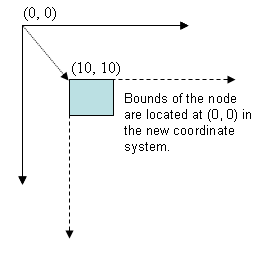

Developer's FAQ
Here you'll find answers to commonly asked questions about all three versions of Piccolo. If you don't find your answer here, you can always post it to the piccolo-chat mailing list.- Is Piccolo thread-safe?
- Why is my app so slow?
- Why are the bounds of my nodes incorrect?
- Why don't PPath's bounds match the points in the path?
- How do I compare bounds in different coordinate systems?
- How do I deploy Piccolo on the Web?
- Why do I get unpredictable results when I create two activities that act on the same object?
- How do I control the order of activities?
- Why is it safe to modify an activity after I create it?
Is Piccolo thread-safe?
No. Piccolo is not thread-safe. Piccolo has been designed from the start to run only in a single thread (usually the event dispatch thread). This constrains the way Piccolo applications can be built, but we feel that overall, it increases usability by simplifying code, and eliminating thread-debugging issues.
Of course, you can still build multi-threaded applications. The key is to invoke any
updates on the main event dispatch thread. For java, use the
invokeLater() method and for .NET use BeginInvoke().
Why is my app so slow?
The best way to see what's taking so long is to run your code in a profiler. Often the results will surprise you. If you can't get a profiler, then you might try commenting out parts of you application and seeing how that affects performance.
If you are drawing a large number of nodes, rendering may be the bottleneck. There two ways to tackle this problem: make the individual nodes draw faster, or draw fewer nodes. Drawing strokes that have a width of more then one pixel seems to be a fairly expensive operation. If you are using PPath, try setting the stroke paint or pen to null and see how that affects performance. If you need to render the strokes, you could try setting the stroke width to zero, which has the effect of always drawing a one-pixel wide stroke. For PImage nodes, you might try using lower resolution images during animated transitions. Drawing fewer nodes is more difficult. You could try a semantic zooming pattern, where you decide what to draw based on the scale that a node is being viewed at. For instance, you might have one large parent node that contains many smaller child "detail" nodes. To improve performance, you could only draw those detail nodes when you are zoomed in on them.
If you try the above approaches and things are still slow, your application may be caught
in a soft infinite loop. This loop is created when you change an attribute in your scene
that requires a repaint, while you are in the process of painting your scene. It will
create a problem where you CPU will be active even when your not interacting with the scene
graph. You can check if you are in this situation by setting the
PDebug.debugPaintCalls flag. It will print a warning to
System.err in Java and System.Console.Error in .NET if repaint is
called when the canvas is getting painted. Note this might happen occasionally when
the application is loaded and initialized, but if it turns into a recursive process
something is going wrong.
Why are the bounds of my nodes incorrect?
You may be confused between bounds and transforms. There are two ways to modify the position and size of a node. You can modify the node's bounds or you can modify the affine transform that is applied to that node.
Each node has an affine transform that defines a local coordinate system for that
node. If you're not sure what that means, check out the
Geometric Transformations section of the
Graphics Primer. If you position a node by calling a method like
TranslateBy(), RotateBy(), ScaleBy(),
OffsetBy(), and many others, you are modifying the node's transform.
Each transformation you apply defines a new coordinate system, with a new origin. For
example, if you set a node's bounds to (0, 0) and then translate node by (10, 10) you will
define a new coordinate system for that node with an origin at (10, 10). See the
Coordinate Systems section of the Graphics
Primer. The bounds however will still be at location (0, 0) because they are stored
in the local coordinate system of the node. That is (0, 0) now refers to the new
origin at (10, 10) in global coordinates.

Transforms are also hierarchical. That means if you modify a node's transform, it will affect that node and all of its children. Let's suppose you add a child to the node described above and set its bounds to (0, 0). The new node will appear at (10, 10) because the transform of the parent is applied down the hierarchy. Now, let's suppose you translate the new node by (10, 10). Where will it appear? At (20, 20). You have now defined a new local coordinate system for the child node with an origin at (20, 20). Remember the bounds will still be at (0, 0) with respect to the new local coordinate system. Check out the Matrix Transformations section of the Graphics Primer to see what's really going on here.
So, what exactly are bounds then? You can think of a node's bounds as a rectangular
bounding box that is guaranteed to be large enough to contain whatever a node renders,
which also happen to be stored in the local coordinate system of the node. If you
position a node by setting the X, Y, Width,
Height, or Bounds properties, you are setting the node's
bounds. Bounds are used by framework for efficient rendering and picking and can be
useful to Piccolo users as well. Bounds are not hierarchical. In the above
example if we set the parent node's bounds to (10, 10), the parent will move to (10, 10),
but the child will not be affected since modifying a node's bounds will not change it's
coordinate system.
Setting a node's bounds will have different effects on different types of nodes, depending
on how they are implemented. But, in general, nodes will change how the render to
accommodate the new bounds. For example, setting the bounds of a PImage will simply
scale the rendered image to the new bounds. Setting the bounds of a PText will clip
the text. But, if the ConstrainWidthToTextWidth or
ConstrainHeightToTextHeight flags are set, setting the width or height
respectively will have no effect. Finally, setting the bounds of a PPath will scale
the points to fit within the new bounds.
Why don't PPath's bounds match the points in the path?
PPath contains a set of points that are rendered with a pen. But, the bounds will not be exactly equal to the bounding box of the points in the path. Remember, the bounds are at least as big as the object, they are not a representation of the object. Since paths have a pen with a default width of 1, the bounds will be the bounding box of the points in the path, plus half the pen width on all sides (.5). So, what happens when you set the bounds of a path? Piccolo will scale the points to fit within the new bounds. So, if you set the width to 60, the rectangle will have a width of 59, with the pen extending .5 on either side.
How do I compare bounds in different coordinate systems?
With potentially thousands of different coordinate systems in a single piccolo interface, how do you compare the bounds of two nodes? Luckily there are several methods to help you convert between coordinate systems. See the Coordinate Systems section of Piccolo Patterns for details.
How do I deploy Piccolo on the Web?
In Piccolo.Java,
You can deploy applets that use Piccolo. However, the Java Runtime will need to be installed on the client machine and the applets are subject to the browser's security settings. To create a Java applet that uses piccolo do the following:
-
Extend the
PAppletclass, located in theextraspackage, and add your piccolo code to theinitializemethod. - Compile your applet with piccolo.
- Copy the Piccolo JARs and class files to a location on the webserver.
-
Finally create an html file with an applet tag to load the applet. If your applet
class was called MyApplet, the applet tag might look something like this:
<applet archive="piccolo.jar, piccolox.jar" code="MyApplet.class" width=200 height=100></applet>
In Piccolo.NET,
You can embed a .NET control, that uses piccolo, in Internet Explorer. The .NET Runtime will need to be installed on the client machine. In practice, this will limit you to windows-based clients. And, this approach will not work with browsers other than Internet Explorer.
The .NET security model places additional restrictions on embedding controls in Internet Explorer. If you are deploying your control locally, you won't have too much trouble. But, if you are deploying it over the web, you might run into some roadblocks. The default Internet Zone security settings on most machines will not allow you to load external dlls, which will be a problem if your applet references Piccolo. The default security settings also restrict some of Piccolo's keyboard input code from running. To solve this problem, you could have the client fully trust your site, or decrease their security settings. But, that might not be desirable. Alternatively, you can do a couple of hacks to get your control to work for most of the world. This approach is described below.
- Uncomment the line "#define WEB_DEPLOY" from PCanvas and recompile Piccolo.NET. This will exclude any code that violates the default Internet Zone settings.
- Create a new class library project that references the DLLs created in step 1.
- Extend PCanvas to create a new control.
- Compile your project to create a new DLL that contains your control.
- Merge your DLL with the Piccolo DLLs using a tool like ILMerge.
- Copy the DLL created in step 5 to a location on the webserver.
-
Finally, create an html file with an object tag to load the control. If your
control class was called MyControl and you named the merged DLL Lib.dll, then the object
tag might look something like this:
<object classid="Lib.dll#MyControl" height="400" width="300"></object>
Why do I get unpredictable results when I create two activities that act on the same object?
Each activity has a start time, which by default is set to the current time. Suppose you call one of PNode's animate methods multiple times:
node.AnimateToPositionScaleRotation(0, 150, 1, 0, 1000);
node.AnimateToPositionScaleRotation(150, 0, 1, 0, 2000);
You might think the node will first animate to (0, 150) and then animate to (150, 0). Instead, both activities occur simultaneously. Each time piccolo processes activities, it will give both animations a chance to step. It will move the node a bit in one direction and then a bit in the other direction. But, since updates are merged, it will appear as if only the first activity is executing. Then, since the second activity has a longer duration, the node will jump to the middle of the second animation and continue. This is probably not the intended behavior. The solution is to set the start time.
PActivity a1 = n.AnimateToPositionScaleRotation(0, 150, 1, 0, 1400);
PActivity a2 = n.AnimateToPositionScaleRotation(150, 0, 1, 0, 2000);
a2.StartTime = a1.StartTime + a1.Duration;
Now, the node will animate all the way to (0, 150) and then to (150, 0), as expected.
How do I control the order of activities?
You can control the order of activities by setting each activity's start time. And, you can use the root node's global time as the current time. So, if you want an activity to start four seconds from now, you could do the following:
activity.StartTime = Canvas.Root.GlobalTime + 4000;
PActivity also has a convenience method to schedule an activity to start after another activity:
secondActivity.StartAfter(firstActivity);
Internally, this just sets the start time of secondActivity to be
firstActivity's start time plus its duration.
Why is it safe to modify an activity after I create it?
You might wonder why you can schedule an activity and then set its start time, or any of
its properties for that matter. The reason is because the activity does not start
running "immediately," even if its start time is set to the current time. When you
schedule an activity with the root or call an animate method, the activity is added to an
internal list stored in the PActivityScheduler class.
PActivityScheduler also stores a windows timer. The scheduled activity
will be given its first chance to step the next time the timer fires, which will be some
time after the current method ends.